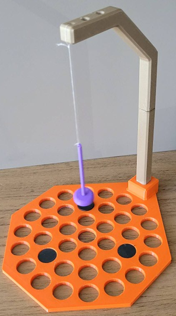
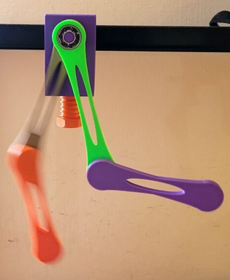
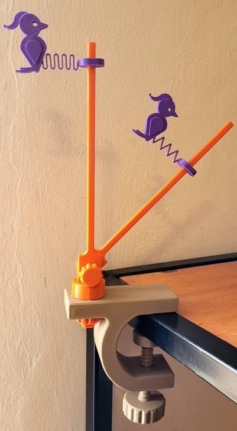

Predecir
Los estudiantes anticipan el movimiento y justifican sus hipótesis antes del ensayo.
Tres dispositivos impresos en 3D para explorar sistemas dinámicos no lineales desde la observación, la comparación y la formulación de explicaciones.



01 / DISPOSITIVOS
Cada montaje propone una pregunta física, variables para modificar y observaciones que pueden discutirse en clase.
INTERACCIÓN MAGNÉTICA
Cinco imanes fijos se disponen sobre una base perforada. Un sexto imán oscila suspendido por un hilo. La distribución de los imanes permite ensayar distintas configuraciones.
4 piezas PLA · mástil de 200 mm
6 imanes de ferrita · hilo de poliéster 40/2
02 / SECUENCIA DIDÁCTICA
La estrategia Predecir, Observar y Explicar (POE) ofrece una estructura para organizar experiencias con los dispositivos y discutir las ideas iniciales de los estudiantes.
Consultar la guía de montajeLos estudiantes anticipan el movimiento y justifican sus hipótesis antes del ensayo.
Comparan repeticiones y registran qué cambia al modificar una condición.
Contrastan sus predicciones con la evidencia y elaboran interpretaciones físicas.
03 / FABRICACIÓN DIGITAL
Selección de modelos, adaptación de piezas y fabricación de montajes de bajo costo. La documentación registra los materiales y las características constructivas utilizadas.
04 / BIBLIOTECA
Descargas y documentación para reproducir los montajes, consultar materiales y preparar actividades.
05 / CRÉDITOS
Los dispositivos parten de modelos publicados por terceros, adaptados para la propuesta experimental. Los créditos permiten consultar cada fuente. Los permisos de redistribución de versiones derivadas deben verificarse con sus licencias originales.